Project 1: Image Filtering and Hybrid Images
In this project, we used Image Filtering to create Hybrid Images. This report explains the process to implement an image filter along with its results as well as the process to create hybrid images with some examples.

Example of a blurred image
Image Filtering
Image filtering is the process of modifying an image to emphasize certain features. Some possible results of an image filter include blurring, sharpening, saturation. In this assignment, we utilize the Gaussian filter. The Gaussian filter is a filter that is used to smoothen images. The Gaussian filter will result in higher blurring when the standard deviation of the filter is higher. The filter weights central pixels higher than the neighboring pixels. The Gaussian filter utilized in this project has a free parameter, the cutoff frequency, that was tuned. As mentioned in the project description, the cutoff frequency represents how much high frequency to remove from the image and how much low frequency to leave in the image.
The input for the algorithm is the original image Ii, and the output will be referred to as the filtered image Io. The filtered image is obtained using an operation called convolution. Convolution calculates the value for a pixel (x1, y1) of Io using a filter. The filter F1is a k x k matrix that will be used for the convolution operation. M1 is the k x k matrix within Ii with the pixel (x1, y1) as the center. The dot product of F1 and M1 is the value for the pixel (x1, y1) in the output image Io.
The filter that was implemented supports gray and RGB images. The filter iterates over the pixels in each one of the R, G, B layers.
In order to ensure that pixels on the edge can be appropriately filtered with the matrix M1, it is necessary to create a padded image that has additional pixels around the edges. In this filter, the image was padded by reflecting the edges.
Code
Below is the code that was used to create the filter.
def my_imfilter(image, filter):
filtered_image = np.zeros_like(image)
filter_xcoord = int((filter.shape[0] - 1)/2)
filter_ycoord = int((filter.shape[1] - 1)/2)
padded_input = np.pad(image, [(filter_xcoord, filter_xcoord), (filter_ycoord,filter_ycoord), (0, 0)], 'reflect')
for layer in range(image.shape[2]):
for row in range(image.shape[0]):
for col in range(image.shape[1]):
x = padded_input[row:row + filter.shape[0], col:col+filter.shape[1], layer]
filtered_image[row, col, layer] = np.sum(np.multiply(filter, x))
Filtered Images
Below are images that resulted from the Identity, Small Blur, Large Blur, Oriented filter (Sobel operator), and the High pass filter (discrete Laplacian), and High Pass Alternative.
| 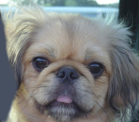 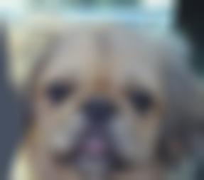 |
|
Identity Filter, Small Blur Filter, Large Blur Filter |
| 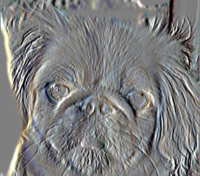 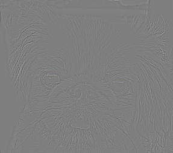 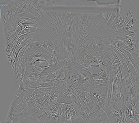 |
|
Oriented (Sobel Operator) Filter, Discrete Laplacian Filter, High Pass Filter |
Hybrid Images
Hybrid Images can be perceived differently depending on the distance that they are viewed from. A hybrid image is composed of a low-frequency image and a high-frequency image. When you view the hybrid image from a greater distance you will see the low-frequency image. When you view the hybrid image from a shorter distance you will see the high-frequency image.
The Gaussian filter is a low-pass filter, so applying the filter results in a low-frequency image. To obtain the high-frequency image, we calculate the low-frequencies of the image and then subtract them from the original image.
Once the low-frequency image and the high-frequency image were added, the pixel values were clipped with a minimum and maximum value. Clipping is necessary to ensure that all pixel values remain within the [0, 1] bounds.
def create_hybrid_image(image1, image2, filter):
low_frequencies = my_imfilter(image1, filter)
high_frequencies = image2 - my_imfilter(image2, filter)
hybrid_image = low_frequencies + (high_frequencies)
hybrid_image = np.clip(hybrid_image, 0, 1)
Hybrid Image Examples
Below are examples of Hybrid Images. For each one of the images, the cutoff frequency parameter was tuned. This consisted of trying multiple cutoff frequencies [1, 10] before finding the best cutoff to create a hybrid image.
For the Dog - Cat example the cutoff frequency used was 8.
 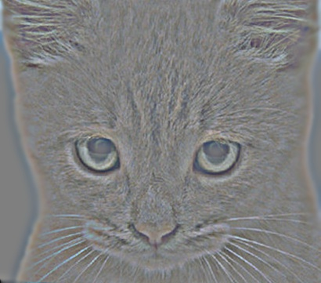
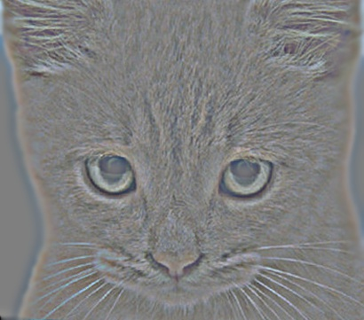
 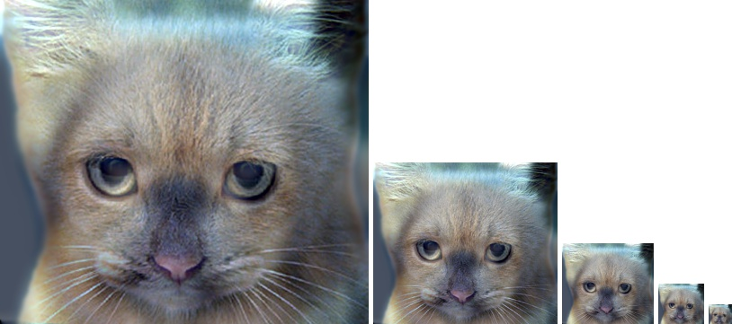
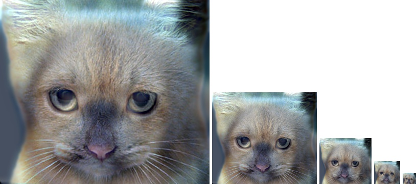
|
|
Low Frequencies, High Frequencies, Hybrid Image, Hybrid Image Scales |
For the Bird - Plane example the cutoff frequency used was 5.
| 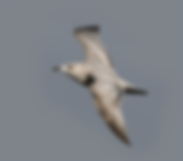 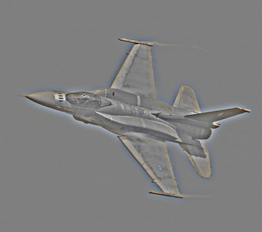 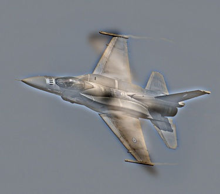 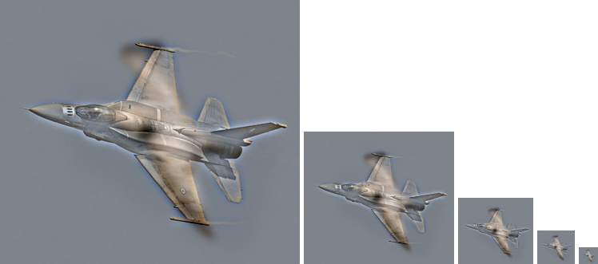 |
|
Low Frequencies, High Frequencies, Hybrid Image, Hybrid Image Scales |
For the Marilyn Monroe - Albert Einstein example the cutoff frequency used was 3.
| 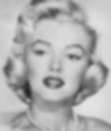 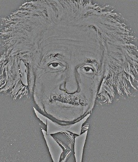 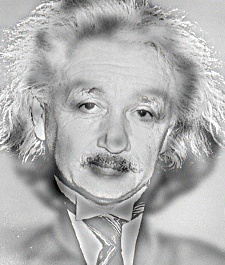 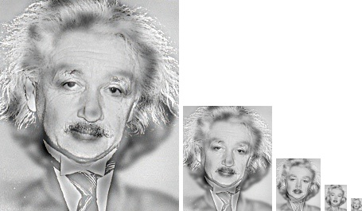 |
|
Low Frequencies, High Frequencies, Hybrid Image, Hybrid Image Scales |
For the Fish - Submarine example the cutoff frequency used was 6.
| 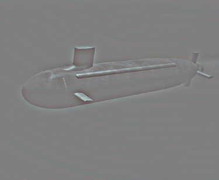 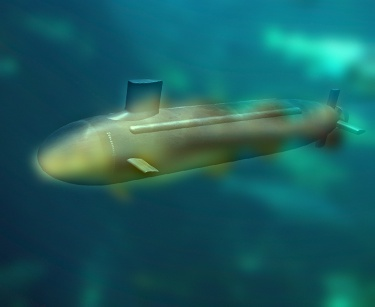 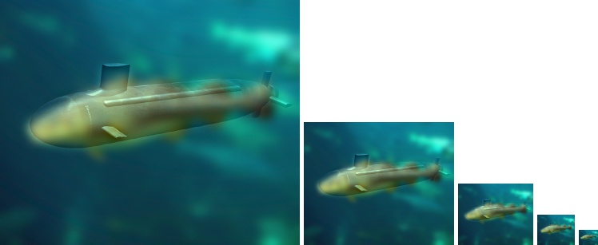 |
|
Low Frequencies, High Frequencies, Hybrid Image, Hybrid Image Scales |
For the Bicycle - Motorcycle example the cutoff frequencies used for each image were different. This pair of images was slightly more difficult to tune, since having the same cutoff frequency for both did not result in the best hybrid image. The cutoff frequency used for the Bicyle image was 8, while the cutoff frequency used for the motorcycle was 4.
| 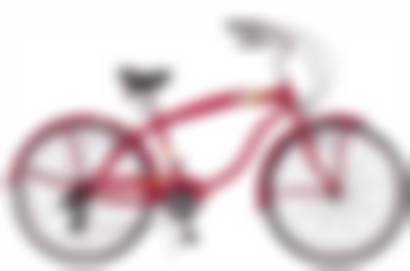 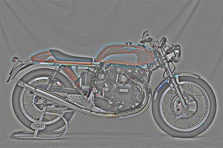 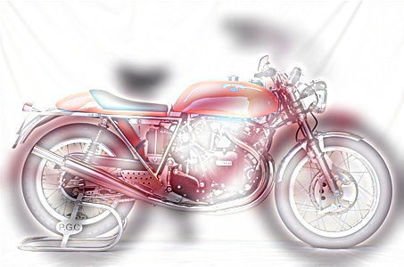 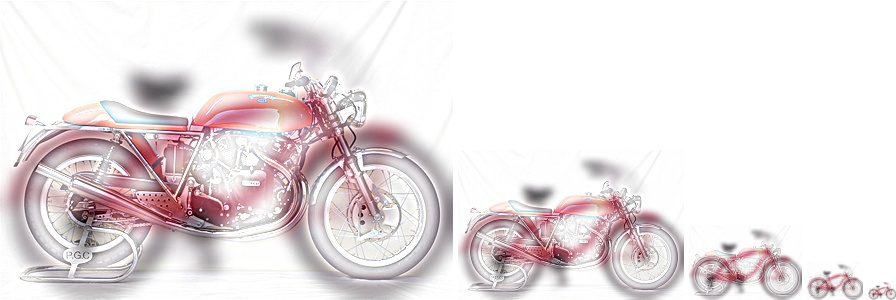 |
|
Low Frequencies, High Frequencies, Hybrid Image, Hybrid Image Scales |
Below is the code that was used to create low frequency cutoff and the high frequency cutoff.
def create_hybrid_image(image1, image2, low_frequency_filter, high_frequency_filter):
low_frequencies = my_imfilter(image1, low_frequency_filter)
high_frequencies = image2 - my_imfilter(image2, high_frequency_filter)
hybrid_image = low_frequencies + (high_frequencies)
hybrid_image = np.clip(hybrid_image, 0, 1)
low_frequency_cutoff = 8
low_frequency_filter = cv2.getGaussianKernel(ksize=low_frequency_cutoff*4+1,
sigma=low_frequency_cutoff)
low_frequency_filter = np.dot(low_frequency_filter, low_frequency_filter.T)
high_frequency_cutoff = 4
high_frequency_filter = cv2.getGaussianKernel(ksize=high_frequency_cutoff*4+1,
sigma=high_frequency_cutoff)
high_frequency_filter = np.dot(high_frequency_filter, high_frequency_filter.T)
low_frequencies, high_frequencies, hybrid_image = create_hybrid_image(image1, image2, low_frequency_filter, high_frequency_filter)
vis = vis_hybrid_image(hybrid_image)